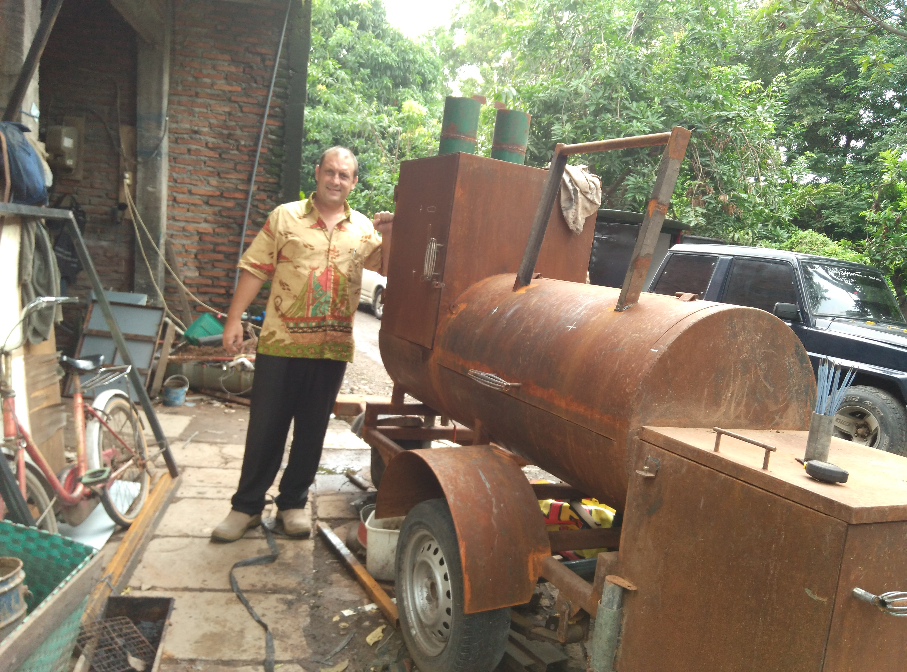
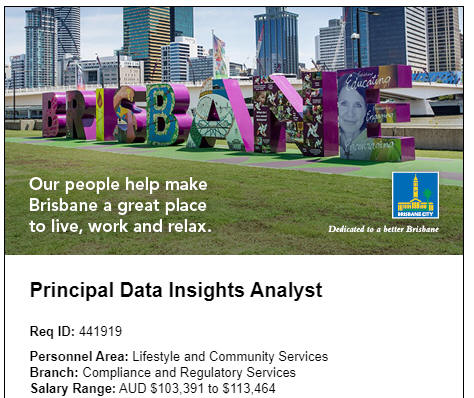
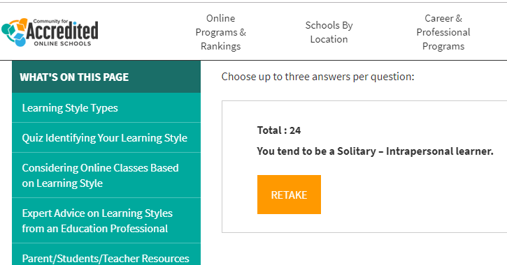
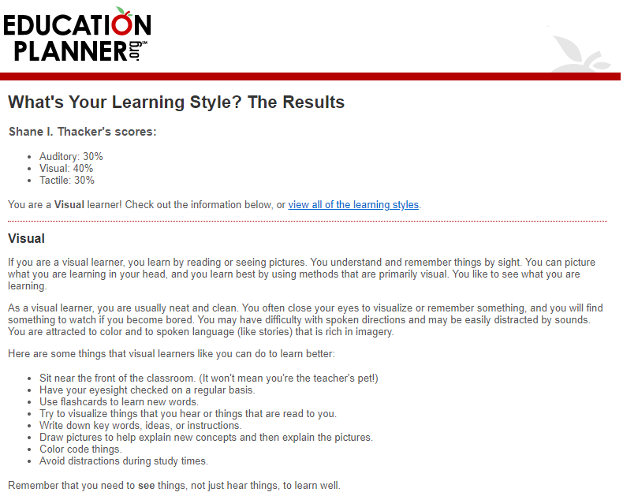
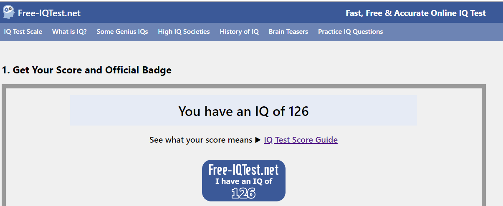

Shane I. Thacker
RMIT s3827970
- Toowoomba The Garden City
- thacker.shane@gmail.com
- +61 0484639618
- www.tinyurl.com/shanermit/


I was born in Adelaide in 1970 to a long line of ANZAC Australian’s of English and Scottish ancestry. My grade 12 high school was completed in 1997 and soon afterwards I moved to Queensland. Our mother tongue at home has always been Australian English.
During the early 1990’s unemployment levels were at an all time high, so I was afforded the opportunity to move to Indonesia where I until recently resided.
This period was where I was thrown into the deep end of business, learning the local languages, marketing and eventually the birth of technology such as windows and ultimately, the internet.
While not manufacturing and exporting garden furniture, I like to spend my time fishing with cold beers or smoking meats with cold beers; so much so that I built my own smoker trailer.

My passion of IT would of started around the time of first using Windows 3.1 and
installing it myself from a handful of floppy discs. Computers and software
intrigued me and I could not get enough of experimenting. Since playing Duke
Nukem 3D I began my interest in the hardware behind the computing. Installing
sound and graphic cards, network cards, modems then setting up LANs then
eventually dial up servers for death matches.
Since those days not much has changed. I still am building my own computer and
fixing everyone else’s computer. I have ended up the go-to guy in our city for
computer issues both software and hardware.
Since 2015 I have been teaching Cambridge IGCSE (Grade 10) ICT. This is very
similar to this Introduction to IT course in some ways, but I am teaching the
young students about things like fax machines, CRT monitors and ZIP drives.
Fortunately, I grew up through this era and don’t need to study to teach this
subject.
After returning to Australia in march 2019 and compeled my Diploma of Business,
I now intend to further my education with a Bachelor of International Business.
One of the prerequisites suggested by the advisor was to take this course first.
I expect from this course to refine my knowledge and am already finding it very
interesting. An example would be GitHub where you are reading this page now.
Previously it is not something I would have been too interested in exploring but
now I am finding it quite fascinating. Also, the online sessions. Since
partaking in these I have explored other platforms such as BigBlueButton and
have used that to run a couple of classes from afar and it has had a very good
reception

Principal Data Insights Analyst is a stable position with the Queensland
Government using cutting edge technologies to gather and use data to create
usable information for upgrading city management to the twenty first century.
What makes this position so interesting for me is the using of Artificial
Intelligence and being part of a team who like myself, not only love Brisbane,
but enjoy implementing new technologies and analysing and improving current
systems.
This position will require someone who is passionate about IT and keeping their skills up to date with modern technologies. The candidate should have quite a few years’ experience and proven track record working with data in the business sector, and the skills to analyse that data to make informed decisions on planning. For this position the applicating needs to be confident working within a team and proactive within that environment. The ability to stay focused on the task and find a solution would be a major component of the position. Most importantly, being able to demonstrate experience as a team leader is essential to be successful is required to be considered for this role. Excellent communication and problem-solving skills while working under stress are paramount. To qualify for this position, one must be an Australian citizen or permanent resident.
 |
 |  |  |
MYERS-BRIGGS TYPE INDICATORmbtionline.com In a team environment, I feel that after reviewing these results that I would need to curtail such traits as being forceful and better focus on traits such as results and bottom line. When forming a team, I should let other team members know that I have strengths in the administration and sticking to goals and targets. I should set out a clear list of standards that the team need to achieve and help keep the team on track to achieving these. |
LEARNING STYLES TESTaccreditedschoolsonline.org This learning style test indicated that I am a solitary intrapersonal
learner. I would certainly agree with this result as I find that when
studying I prefer a quiet environment and to research by myself rather
than ask for assistance or reach out to a friend for information. |
LEARNING STYLES TEST 2educationplanner.org Of the two learning style tests, I found this one to be very accurate. That I am a visual learner really does match the way I learn. When listening to a lecture I often become bored and sleepy, but when researching on the internet for example, my mind buzzes along and I am click links and reading pages and watching videos, putting all the pieces together. As a team member, like the previous learning style test, I would standby my decision to act as researcher and administrator and perhaps secretary/note taker. As per the previous learning styles test, I would be best suited to position myself in a team as researcher and administrator. This way I could be more productive getting the project completed rather than spending time discussing it. |
IQ TESTfree-iqtest.net In the past I have taken IQ tests online and always seem to average around the 130 mark. Therefore as this result is consistent with past tests, I can assume that it is fairly accurate. I am happy with my result of 126 indicating above average intelligence, as 70% of people fall into the range of 85-115 Comparing the results of an IQ test I feel would not necessarily influence behaviour in a team environment. A team consist of various members with different abilities that do not necessarily involve intelligence, but more about skills and personalities. Therefore, I would not take these results into consideration when forming a team. I would form a team based on skillsets, experience and compatibility. |